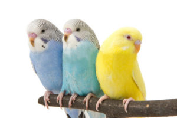
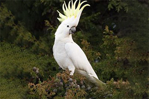
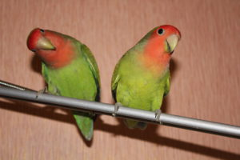

| порода | описание | фото | цена |
| Волнистые попугаи | Одни из наиболее маленьких попугайчиков (весят они 30-45 грамм). Плюсом является их глобальное распространение по всему миру, небольшая цена и неприхотливость. Попугаи бывают обычные и выставочные (чуть более большие и со стороны как бы более серьезные. Удивляет также их разнообразие цветов: зеленые, синие, желтые, белые, разноцветные, с волнами и без. Еще одна особенность — хорошее подражание человеческой речи. Маленькая птичка может выучить до 200 слов и произносить целые предложения, а при должной заботе она станет еще и хорошим другом, который будет вас преследовать по всей квартире и все дела совершать вместе с вами. Живут попугаи в среднем 10-15 лет. |  | 5000р. |
| Какаду | Как и многие виды попугаев бывают различных подвидов, в частности белые и черные, с желтым хохолком и розовым хохолком. Если какаду одомашнены, выкормлены людьми, то могут стать отличными товарищами. Однако, это очень шумные птицы, и многие владельцы признают именно этот вид самым активным, хулиганистым и ревнивым. Они очень любят играть, кричать, летать — что требует большого вольера для хорошего содержания. Живя в квартире оры какаду вряд ли сблизят вас с вашими соседями |  | 3500р. |
| Неразлучники | Небольшие по размеру попугаи, примерно как волнистые попугаи, однако более коренастые. Имеют мощный клюв, и очень яркую окраску. Требуют не так много внимания, если живут попарно, очень любопытные и за ними интересно наблюдать, будь то одна птичка, или пара. Практически не поддаются обучению, и вместо пения больше чирикают и трещат. Живут 15-20 лет. Однако именно эти птички все больше завоевывают популярность у домашних владельцев, ведь за ними так интересно наблюдать! При этом птицы неприхотливые и не требуют наличие больших вольеров |  | 4000р. |